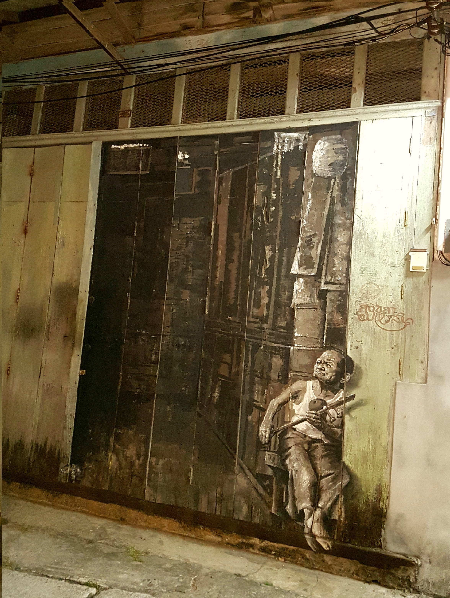
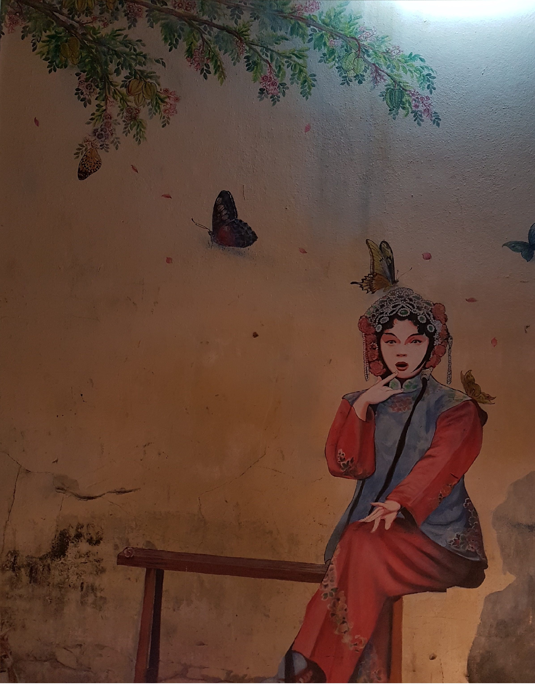

ย่านเมืองเก่าถนนนางงาม
ย่านเมืองเก่าถนนนางงาม
ถนนนางงามเป็นถนนเล็กๆใจกลางเมืองสงขลาที่มีประวัติยาวนานนับร้อยปี เดิมเรียกว่า “ถนนเก้าห้อง” เพราะมีอาคารบนถนนสายนี้เพียง 9 คูหา หรือ 9 ห้อง แต่หลังจากปี พ.ศ.2478 ก็ถูกเรียกเป็น “ถนนนางงาม” เนื่องจังหวัดสงขลาได้จัดงานปีใหม่และงานฉลองรัฐธรรมนูญ พร้อมจัดประกวดนางงามสงขลาเป็นปีแรก ปรากฏว่าสาวงามจากถนนเก้าห้องได้รับคัดเลือกเป็นนางงามสงขลาคนแรก นับแต่นั้นมาคนสงขลาก็เรียกถนนสายนี้ว่า “ถนนนางงาม”
ถนนนางงามเป็นศูนย์กลางย่านอาหารพื้นบ้านของสงขลาตั้งแต่อดีตจนถึงปัจจุบัน มีอาหารหลากหลายให้เลือกรับประทานตลอดทั้งวัน กว่า 30 ร้าน เป็นที่ตั้งของศาลเจ้าพ่อหลักเมือง อันเป็นที่เคารพสักการะของชาวสงขลาและผู้มาเยือน เมื่อมาเยือนถนนนางงาม ท่านแวะสักการะศาลเจ้าพ่อหลักเมือง พร้อมกับเดินชมบ้านเรือนสองข้างถนน ที่ยังคงร่องรอยของตึกแบบชิโนโปตุกีสให้ชม สัมผัสบรรยายกาศแบบดั้งเดิมของชาวสงขลา สภากาแฟยามเช้า เลือกชิมอาหาร ที่มีให้เลือกรับประทานหลากหลายไม่ว่าจะเป็นของคาว ของหวาน และซื้อติดไม้ติดมือไปเป็นของฝากกว่า 30 ร้าน ขนมพื้นบ้านของสงขลาที่หารับประทานได้ยาก อาหารจีนสูตรดั้งเดิมที่มีการสืบทอดสูตรรุ่นต่อรุ่นจนถึงปัจจุบัน

